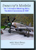
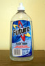
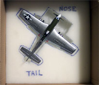
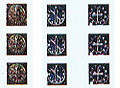

|
Tools and Tips Swanny’s Models is at it again with another addition to the Advanced Modeling Skills series of DVDs. In volume 4 “Salt Chipping & Water Dioramas”. Watch as Swanny shows every intimate detail of using conventional table salt to create realistic chipping of painted surfaces plus you no longer need to worry about modeling water or creating extreme wear effects on your model, Swanny reveals all right here for your benefit. Advanced Modeling Skills; Salt Chipping & Water Dioramas. 10/30/2010 The adventure continues at Swanny's Models. This time around we take a look at working with a vacuform conversion kit.  This video takes the modeler through all the steps of learning how to work with vacuform model parts, resin and photo etched parts are revisited and the process of achieving a realistic natural metal finish utilizing lacquer based paints is covered in addition to some other goodies. Here you can purchase your copy of Advanced Modeling Skills; Vacuform Conversions & NMF. 7/1/09 Swanny's Models instructional video Volume #2 is now ready for distribution. This video covers  advanced modeling skills required to assemble and paint resin cockpits
as well as everything involved in building a photo etched cockpit.
Acetate instrument details are discussed, how to anneal photo etch
sheets is shown, basics of working with vacuformed canopies are covered
and more. This is well over four hours of modeling bliss and you can get
yours now right here. Advanced Modeling Skills; Resin and PE Cockpits. 8/27/07
advanced modeling skills required to assemble and paint resin cockpits
as well as everything involved in building a photo etched cockpit.
Acetate instrument details are discussed, how to anneal photo etch
sheets is shown, basics of working with vacuformed canopies are covered
and more. This is well over four hours of modeling bliss and you can get
yours now right here. Advanced Modeling Skills; Resin and PE Cockpits. 8/27/07 Swanny's Models is proud to announce the re-release of the first in a series of instructional modeling DVDs.  This DVD will take the modeler from the first parts preparation steps
all the way through decaling and basic weathering. The primary purpose
of this video is to assist the new modeler in achieving good results
early. You can follow this link for more information on the video and
ordering information. Basic Model Building Skills & the P-40K. 8/27/07
This DVD will take the modeler from the first parts preparation steps
all the way through decaling and basic weathering. The primary purpose
of this video is to assist the new modeler in achieving good results
early. You can follow this link for more information on the video and
ordering information. Basic Model Building Skills & the P-40K. 8/27/07
Christian Jackson joins us today from Big Sky Country with a nice article on the Basics of Airbrushing. Chris covers the basic principles behind the two primary airbrushes we find in our hobby, how they work, what kind of air sources are available and how to maintain your hardware. If you are just beginning to work with an airbrush you will most definitely want to read this article carefully. Airbrushing Basics. 7/29/06 Lubos Vinar, proprietor of Hobbyshop.cz is producing his own line of decals. Theses decals demonstrate good print registry and color density. He offers markings in 1/72 and 1/48 for several esoteric subjects. These are ALPS printed decals which means they have a continuous carrier sheet and must be trimmed carefully before use. The decals all appear to be of good quality with sharp definition. Check out this selection of APC Decals. 1/26/08 We put a lot of effort into building our models, then what? They sit on a shelf? Maybe you are lucky enough to have a model show going on within driving distance and you can display them - on a table. Why not build a simple diorama base? This can add so much flavor to your model for both display and for taking pictures. Today many of us have ready access to web storage sites and want to show off our work in various forums. This feature will help you to build that diorama base to make your model presentation at a show, on the shelf or on the web just a little more interesting. Here are some tips for Basic Diorama Construction and Scene Settings for Model Photography. 9/4/04 Here is another Tips page. These are the techniques that I use to weather models. Included here you will find material covering Sludge Washes and using Tamiya Smoke for exhaust stains and gun blast stains. Welcome to The Basics of Weathering 5/12/03 This is an interesting product that has been used in the model railroad sector for a little while and has some practical applications for modelers, especially armor modelers. This is a potent little blend of acids designed to cause a reaction on the metal surface and blacken it, hence the name, Blacken-It. Here I take a set of Friulmodel tracks, assemble them and list step-by-step how to apply this product. From A-West this is Blacken-It. 1/13/08 You will find reference to a product called "Future" in many modeling sites or review articles.  Most of us here in the USA know what this is but, surprisingly, many modelers are still unfamiliar with this wonderful product or, in the case of overseas modelers, can't even find it in stores. Well, here are the answers to ALL the questions. Here it is The Complete Future!!! Updated 11/07/16 Hobbycraft has produced several kits of the Dornier Do-17 to represent nearly every major subtype of the aircraft but all suffer from the same ailment, a serious banana bow to the fuselage. Gary Buchanan joins us today with an in depth look at how to fix that bow once and for all. In the past fixes have been attempted by Squadron and their replacement canopy does address the nose issues but here you have the ultimate fix for the Do-17 Banana Bow. 11/4/06 Safety should always be of concern to modelers. We work with many items that can cause damage or bodily injury to ourselves. Recently, the dangers of solvent and thinner fumes became a concern to me and I have created a solution to alleviate some of this hazard. For complete construction instructions on building this life saving tool click here...Paint Fume Can 7/6/03 As modelers we are always replicating something with something else. We are making metal finishes but not actually using metal. Or, we want to simulate wood, which is always a challenge to do convincingly however Mark Therrell is here to show us the way. This feature will open new doors in model painting for you, join Mark and I in this excellent feature on How to get Wood with oil paints. 3/8/09 With the variety of Luftwaffe interior colors used, it is difficult to keep track of what goes where and when. In an effort to assist the scale modeler, we will look at these color selections in two sections, the first dealing with cockpits, and the second focusing on wheel wells, engine compartments, etc. While this is not meant to be the definitive guide on the subject, you should find it to be a reasonably accurate and useful guide. Luftwaffe Interior Colors 11/26/04 So you have been looking at models, be it airplane, auto or armor and you have finally bought your first kit. Now what? What exactly will you need to have to build and finish that model? Here I take a look into the Modeler's Toolbox to see which tools and gadgets you must have and which items are simply nice to have. Even if you have already built a few kits this feature may help you to decide which tools should be next on your list. Come with me and paw through the Modeler's Toolbox. 3/26/06 Several years ago, I began to hear of a wonderful liquid filler for use on plastic models. It was called Mr. Surfacer but here in the States I could not find this wonder product anywhere. That is no longer the case; this wonderful liquid filler is now readily available to modelers everywhere. As with most new products the biggest questions are; "How do I use this?" and "Is it really that great?". Well come with me and look at three grades of liquid filler from Gunze-Sangyo, Mr. Surfacer 500, 1000 and 1200. 4/9/05 Updated 8/12/06 Nothing spoils a nice P-38 model worse than something being cockeyed and it's very easy to do. Seems quite a few modelers are challenged by P-38 tail boom alignment, especially with the Academy kit. Now there is hope for all of us unsatisfied P-38 builders and that hope comes in the form of Paul Budzik and his ingenious P-38 construction jig. Check out this quick and easy P-38 Fix. 7/19/08 This is another tips page focusing on more advanced weathering techniques. Here I will take you through the process I follow to create paint chips using common table salt and how to make more aggressive washes to highlight raised panel lines. I'll also be taking a look at how to fade individual panels using artists pastel chalks and touch once again on exhaust stains and gun blast stains. For advanced weathering, here is Salt Chipping & Raised Panel Lines. 1/30/04 Modeling starts with the introduction of a kit of a favorite subject and a few simple tools. Before you know it there are nine or ten models waiting and they have formed a small stack, the beginnings of the fabled Stash. Soon the modeler realizes that a new tool must be introduced that can keep track of what he has, what accessories he has or needs for a particular kit and just where is that kit hiding. Here is software specifically designed with the scale modeler in mind to track all those kits, from Suisoft the Scale Model Kitbase. 06/11/2010 I've run into quite a few new modelers and even some experience modelers that have questions about how to deal with puttying a seam. I've covered this topic before but it's buried in the FW-200 build. To make it a little easier to locate I'm repeating it here. For an instructional on how to deal with applying putty to a seam, click here - Seam Repair 10/20/03 Natural Metal Finishes sure look good but they were always something I avoided like the plague. I would always look for the camouflage scheme on any aircraft rather than deal with trying to simulate a bare metal finish, then I discovered Alclad 2 metal lacquers. Suddenly the Natural Metal Finish had become achievable. Now no more complicated than any other paint scheme. Come, let me show you the tricks to achieving a NMF or, as I like to refer to it, The Secret Life of Alclad 2. 2/22/2009 Rebuilt with new tricks and ideas It's one thing to be able to build a model and have it displayed in your home but to be able to transport  it to a show or ship it to a friend or customer and have even the slightest hope of it arriving in one piece - that is something else entirely. I have tried several methods of dealing with this problem over the years. Once I even build a wooden shipping crate in an effort to protect my work, it was successful but costly and time consuming. Finally I seem to have hit on a method of packaging that is fast, cost efficient and secure. For your consideration here is Secure Packaging of Models for Shipment. 5/26/04 Updated 12/10/05 I'm always on the prowl for instrument decals, prop markings and seat belts. Well, I hit the jackpot this time. One day while surfing E-Bay I ran across this beautiful little package that contains plenty of instrument markings, propeller markings with stencils, seat belts and a few other little items that any WW2 or Korean War era modeler would find most useful. All this and at a price that is very pocket-book friendly. Don't miss these decals from Skunk-LabWorks. 2/9/08 I have been masking canopies for so long with strips of masking tape that I have forgotten just how tough it was to acquire this skill. More than one new modeler or returning modeler has asked how to effectively mask their canopies. As an alternative to expensive precut masks I will take you on a step-by-step tutorial on preparing and masking your canopy using standard masking tape. In an effort to make your life a little more stress free here is Swanny's Approach to Masking Canopies. 1/7/05 Back in the seventies when plastic modeling was experiencing it's first growth boom the state of the art model featured raised panel lines and other raised surface details. For many of us older modelers scribing was just a normal part of any build if you didn't like raised panel lines. These days it has become sort of a lost art since most of the recent kits come with recessed panel lines. Come, share a journey with me and see how to scribe a model and preserve your sanity in the process. Here is A Systematic Approach to Scribing. 6/16/04 Future floor polish can be mixed with a variety of tinting agents and then used to tint canopies for modern jet aircraft. Here I take you into my little home grown lab and take a look at some of these tinting agents, how to mix your solutions and how to dip the canopy. Results are mixed but experimentation is the key to success. Have a look at Tinting With Future 10/26/03 As modelers we often see Japanese aircraft weathered to the point where there is more bare metal than paint. Various forms of paint chipping are employed to achieve this effect but the question arises, is this always accurate? Francois Weill has written an excellent article on the various causes of poor paint adhesion within the Japanese Air Forces and discusses where and why we might see paint chipping from the finish. He has been so gracious as to allow this article to be reprinted here for your consideration. Please join me in welcoming Mr. Weill to Swanny's Models and before you paint that next Japanese aircraft give this a read - Weathering Effects on Japanese Aircraft. 12/31/07 Welcome a newcomer to the world of model accessories. Woodbeck Decals has introduced a new line of  aircraft instrument decals and wood finish decals for use in 1/72, 1/48 and 1/32 scale. A useful tool in any modeler's toolbox these decals are based on pictures taken of actual instruments in aircraft museums. While the line of products is still brief this is a player to watch, here are the newest offerings from Woodbeck Decals. 8/19/05
|


|